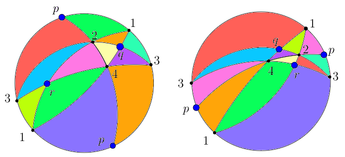

Mridul Aanjaneya
|
|
Mridul Aanjaneya
|
|
|  | Abstract: We consider the problem of computing a triangulation of the real projective plane P2, given a finite point set P as input. We prove that a triangulation of P2 always exists if at least six points in P are in general position, i.e., no three of them are collinear. We also design an algorithm for triangulating P2 if this necessary condition holds. As far as we know, this is the first computational result on the real projective plane. |
(C) Mridul Aanjaneya, All Rights Reserved.


![[PHOTO]](../../images/knight_small.png)